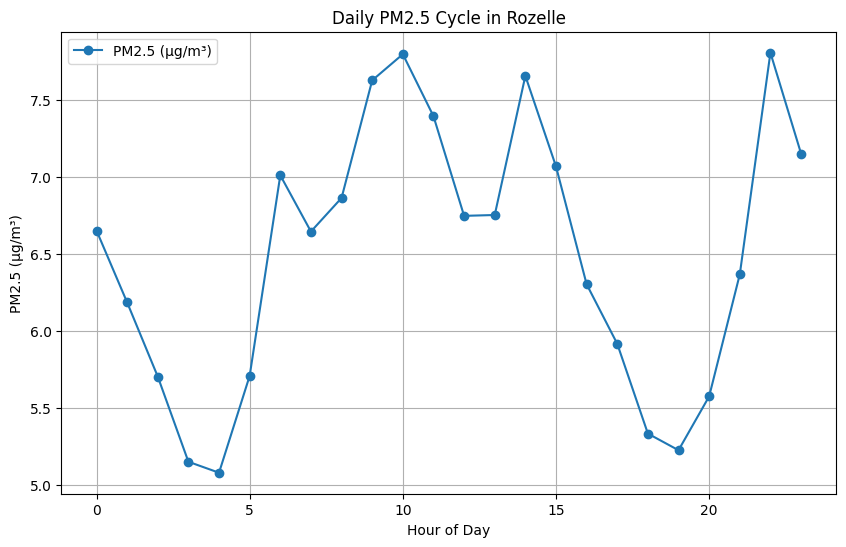
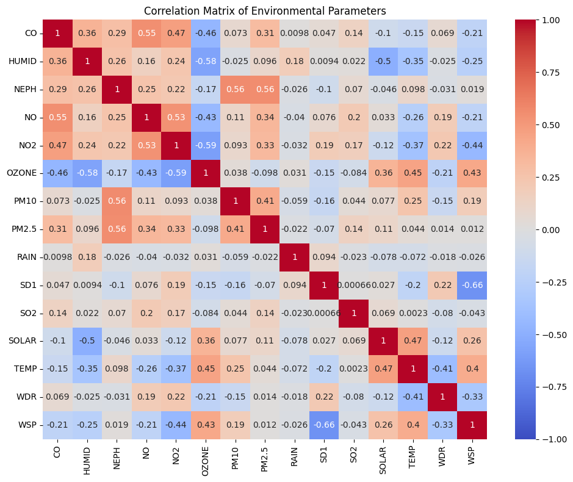
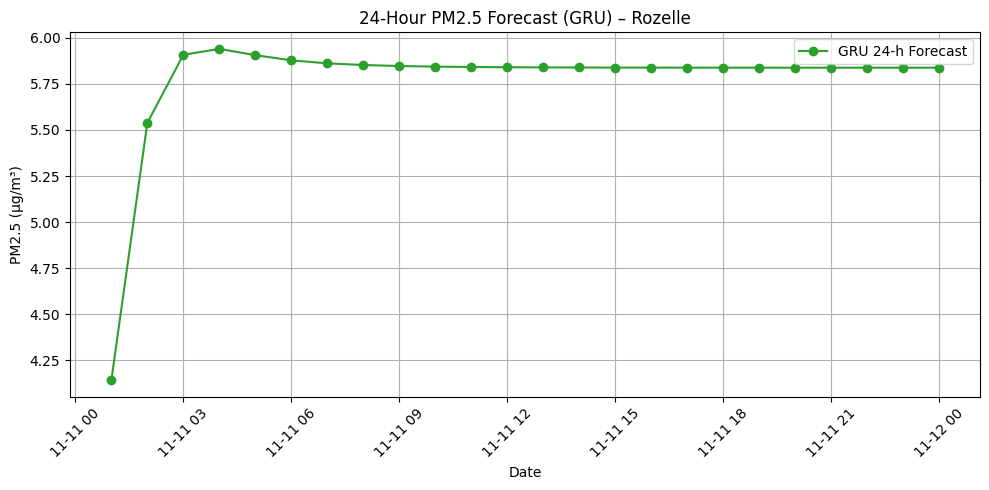

Time Series
Rozelle Air Quality
Hourly PM2.5 forecasts from NSW monitoring data at Rozelle.
GRU
Best model
2.68
Test RMSE
0.658
Test R²
8,711
Hourly records
The Question
Can a recurrent model forecast the next hour of PM2.5 from a year of hourly air-quality readings at Rozelle?
The series runs from 11 Nov 2024 to 10 Nov 2025 (8,711 hours, 18 variables). After correcting 24:00 timestamps, forward-filling gaps, and clipping negative pollutant readings, Grey Relational Analysis ranked the inputs. Modeling used NEPH, PM10, PM2.5, SO2, NO2, CO, NO, and RAIN.
Each sample is 48 hours of scaled history predicting the next hour of PM2.5. The split is chronological: 80% train, 20% test. LSTM, Bidirectional LSTM, and GRU were trained with early stopping (up to 150 epochs).
Daily Pattern
PM2.5 at Rozelle dips before dawn, rises through the morning, and peaks again late evening.

Hourly mean PM2.5 at Rozelle. Lowest around 04:00, highest near 10:00 and 22:00.
What Moves Together
NEPH tracks PM2.5 most closely among the co-pollutants. Ozone runs against NO2, as expected in photochemistry.

Pearson correlations across the monitoring variables.
Training Setup
Same features, same split, three recurrent architectures.
-
Clean
Fix 24:00 hours, forward-fill missing values, set negative pollutant readings to zero.
-
Rank
Grey Relational Analysis keeps the eight series most related to the PM2.5 target.
-
Sequence
MinMax scaling, then 48-step windows. Train on the first 80% of time, test on the last 20%.
-
Train
LSTM, BiLSTM, and GRU with Adam, dropout, batch norm, and early stopping on validation loss.
GRU Held the Test Set
Lowest RMSE and highest R² on next-hour PM2.5. Spikes are still hard, but the baseline level tracks.
| Model | RMSE | R² |
|---|---|---|
| LSTM | 2.84 | 0.616 |
| Bidirectional LSTM | 2.77 | 0.635 |
| GRU | 2.68 | 0.658 |
GRU on the held-out window. The model follows the day-to-day level; sharp peaks are underestimated.
Next 24 Hours
Rolled forward from the last observation. The GRU forecast settles near 5.8 µg/m³ after the first few hours.

24-hour GRU forecast from 11 Nov 2025 00:00.